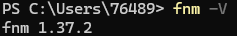
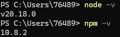
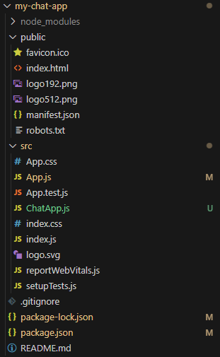
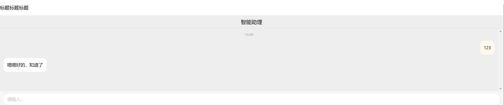

作为一名嵌入式软件工程师，我理应具备丰富的前端知识。
前言
之前的llm基本能用了，现在该基于他来搭建一个chatbot了。但对于从来没接触过前端开发的我来说，从零开始的工程量有些感人了（虽然应该会很有趣吧），所以还是老老实实用人家的开源项目吧。
开发准备
正如我前面所说的，我此前完全没有接触过前端开发，所以这里也需要从配置环境和hello world开始。
安装fnm
fnm（Fast Node Manager）是一款轻量、快速的Node.js版本管理工具，用来替代nvm来管理Node.js版本。它比nvm更高效，特别适合需要频繁切换Node.js版本的开发者。
直接在github上下载：https://github.com/Schniz/fnm/releases
解压后将fnm.exe放到创建好的目录下，我放到了D:\fnm目录下。
然后在系统变量的path中添加D:\fnm，再添加如下两个系统变量：
FNM_DIR
E:\fnm\node
FNM_NODE_DIST_MIRRORs
E:\fnm\node在power shell中输入fnm -V

安装成功
安装Node.js和npm
参照node.js官网上的说明：https://nodejs.org/zh-cn/download/package-manager
# 安装 fnm (快速 Node 管理器)
winget install Schniz.fnm
# 配置 fnm 环境
fnm env --use-on-cd | Out-String | Invoke-Expression
# 下载并安装 Node.js
fnm use --install-if-missing 20
# 验证环境中是否存在正确的 Node.js 版本
node -v # 应该打印 `v20.18.0`
# 验证环境中是否存在正确的 npm 版本
npm -v # 应该打印 `10.8.2`
安装成功
配置国内的镜像源：
npm config set registry https://registry.npmmirror.com这里设置的是淘宝镜像。
快速上手
先来创建一个React项目：
npx create-react-app my-chat-app然后在项目中安装chatui的包：
cd my-chat-app
npm install @chatui/core --save在终端中运行以下命令以启动服务器：
npm start这样就会打开一个本地的网页。
生成React项目后会得到一个文件夹：

其中的ChatApp.js是我新增的，内容如下：
import React from 'react';
import '@chatui/core/es/styles/index.less';
import Chat, { Bubble, useMessages } from '@chatui/core';
import '@chatui/core/dist/index.css';
const ChatApp = () => {
const { messages, appendMsg, setTyping } = useMessages([]);
function handleSend(type, val) {
if (type === 'text' && val.trim()) {
appendMsg({
type: 'text',
content: { text: val },
position: 'right',
});
setTyping(true);
setTimeout(() => {
appendMsg({
type: 'text',
content: { text: '嗯嗯好的，知道了' },
});
}, 1000);
}
}
function renderMessageContent(msg) {
const { content } = msg;
return <Bubble content={content.text} />;
}
return (
<Chat
navbar={{ title: '智能助理' }}
messages={messages}
renderMessageContent={renderMessageContent}
onSend={handleSend}
/>
);
};
export default ChatApp;const App = () => {...};：定义App函数组件，构成整个应用的聊天界面。括号里的内容是函数的参数，大括号里的是函数的具体内容。
const { messages, appendMsg, setTyping } = useMessages([]);：使用useMessages钩子管理消息列表，获取messages、appendMsg和setTyping等函数。
- messages：当前消息的数组列表，用于渲染聊天记录。
- appendMsg：用于在消息列表中追加消息的函数。
- setTyping：设置“正在输入”状态的函数。
function handleSend(type, val) {...}：定义消息发送处理函数handleSend。
-
type：消息的类型，例如text表示文本消息。
- val：消息内容。
if (type === 'text' && val.trim()) {...}：确认消息类型是文本且内容不为空。
-
appendMsg({...})：在消息列表中添加用户的消息，内容为val。
-
position: 'right'：表示该消息显示在右侧（表示用户消息）。
- setTyping(true);：设置“正在输入”状态。
-
setTimeout(...)：模拟1秒后回复固定消息"‘嗯嗯好的，知道了’"。
function renderMessageContent(msg) {...}：定义渲染消息内容的函数renderMessageContent。
- msg：消息对象，包含消息内容和类型等信息。
-
return <Bubble content={content.text} />;：使用Bubble组件显示消息内容。
<Chat ... />：渲染ChatUI的Chat组件。
-
navbar={{ title: '智能助理' }}：设置聊天窗口标题为“智能助理”。
-
messages={messages}：将messages列表传入Chat组件，以渲染消息内容。
-
renderMessageContent={renderMessageContent}：指定消息内容的渲染函数。
-
onSend={handleSend}：设置消息发送处理函数handleSend，以便在用户发送消息时调用。
export default ChatApp;：将模块中的ChatApp组件作为默认导出导出。
然后修改App.js以调用ChatApp组件：
import './App.css';
import ChatApp from './ChatApp.js'
function App() {
return (
<div>
<div className='title'>
<p>标题标题标题</p>
</div>
<div className="chatApp">
<ChatApp />
</div>
</div>
);
}
export default App;<div>是HTML中的一个块级元素，代表一个文档中的一个容器或分组，用于组织和布局内容,通常用于将页面分成不同的区域，以便更好地组织和管理内容。<div>本身没有特定的语义，可以在其中放置其他HTML元素，如文本、图像、其他容器等。
访问 http://localhost:3000/ ，页面显示如下效果：

到此为止，我们就实现了一个稍微复杂了点的hello world，下一步就是将这个对话界面和我们的LLM服务连接起来。
WebSocket
WebSocket 是一种协议，用于在 Web 应用程序中创建实时、双向的通信通道。
传统的 HTTP 请求通常是一次请求一次响应的，而 WebSocket 则可以建立一个持久连接，允许服务器即时向客户端推送数据，同时也可以接收客户端发送的数据。WebSocket 相比于传统的轮询或长轮询方式，能够显著减少网络流量和延迟，提高数据传输的效率和速度。它对实时 Web 应用程序和在线游戏的开发非常有用。
我的理解是，HTTP相当于写信，收到来信了才知道怎么回信，Websocket更像打电话，两边接通了就能想说什么说什么了。
在文章《Cherrypy入门》中，用的其实就是传统的HTTP请求，每次调用都向后端进行一次 request，然后等待后端的响应。这种方式虽然也可以实现我的需要，但更先进的通讯方式总是更好的，也许能避免许多不必要的麻烦。
更基础的原理部分我将把他放到《计算机网络相关概念》一文中，遇到了其他不懂的概念可以一并整理，这里只介绍应用部分。
实现并不复杂，首先是前端部分：
import React, { useEffect, useState } from 'react';
import '@chatui/core/es/styles/index.less';
import Chat, { Bubble, useMessages } from '@chatui/core';
import '@chatui/core/dist/index.css';
// 初始信息
const initialMessages = [
{
type: 'text',
content: {text: '智能助理加载中，这需要耗费一定时间，请耐心等待。'},
user: { avatar: '//gw.alicdn.com/tfs/TB1DYHLwMHqK1RjSZFEXXcGMXXa-56-62.svg' },
}
]
const ChatApp = () => {
const { messages, appendMsg, setTyping } = useMessages(initialMessages);
// 定义socket
const [socket, setSocket] = useState(null);
const [initialized, setInitialized] = useState(false)
const MAX_RETRIES = 5
useEffect(() => {
// 建立新的websocket连接
const ws = new WebSocket("ws://localhost:8765");
setSocket(ws);
ws.onopen = () => {
console.log("WebSocket connection established");
sendInitMessages(ws);
};
ws.onmessage = (event) => {
// 接收到信息
if (event.data === "llm_done")
{
setInitialized(true)
setTyping(true);
setTimeout(() => {
appendMsg({
type: 'text',
content: { text: '初始化完成，欢迎使用！' },
user: { avatar: '//gw.alicdn.com/tfs/TB1DYHLwMHqK1RjSZFEXXcGMXXa-56-62.svg' },
});
}, 1000);
console.log("connect to llm");
}
else
{
setTyping(true);
setTimeout(() => {
appendMsg({
type: 'text',
content: { text: event.data },
user: { avatar: '//gw.alicdn.com/tfs/TB1DYHLwMHqK1RjSZFEXXcGMXXa-56-62.svg' },
});
}, 1000);
}
};
ws.onclose = () => {
// 关闭连接
console.log("WebSocket connection closed111");
};
return () => {
ws.close();
};
}, [appendMsg]);
const sendInitMessages = (ws) => {
const initMessages = "initLLM02175";
let attempts = 0;
const sendMessageWithRetry = (msg) => {
if (initialized === true)
{
return
}
if (ws.readyState === WebSocket.OPEN)
{
ws.send(msg);
}
else if (attempts < MAX_RETRIES)
{
attempts += 1;
console.log(`Retrying to send: ${msg} (attempt ${attempts})`);
setTimeout(() => sendMessageWithRetry(msg), 1000); // 延时重试
}
else
{
console.warn(`Failed to send message: ${msg} after ${MAX_RETRIES} attempts`);
}
};
sendMessageWithRetry(initMessages)
};
function handleSend(type, val) {
if (type === 'text' && val.trim()) {
appendMsg({
type: 'text',
content: { text: val },
position: 'right',
});
setTyping(true);
if (initialized != true)
{
setTimeout(() => {
appendMsg({
type: 'text',
content: { text: '初始化中，请稍后...' },
user: { avatar: '//gw.alicdn.com/tfs/TB1DYHLwMHqK1RjSZFEXXcGMXXa-56-62.svg' },
});
}, 1000);
}
else
{
if (socket && socket.readyState === WebSocket.OPEN)
{
socket.send(val);
}
}
}
}
function renderMessageContent(msg) {
const { content } = msg;
return <Bubble content={content.text} />;
}
return (
<div>
<Chat
navbar={{ title: '智能助理' }}
messages={messages}
renderMessageContent={renderMessageContent}
onSend={handleSend}
/>
</div>
);
};
export default ChatApp;为了确保未来的我在源代码遗失的情况下还能看懂，还是把整个写好的前端都放上来吧。
建立连接后首先会向后端发送初始化大模型的消息，后端接收到消息后开始初始化大模型，初始化完毕后再向前端返回初始化完成的消息，整个chat组件开始正常工作。
为保证后端收到初始化消息，前端会按固定的间隔发送多条消息，保证初始化顺利进行。
后端就更简单了：
import os
import cherrypy
import asyncio
import websockets
import threading
import mdk_llm.llm_client as llm
import mdk_llm.dataset_client as dataset
ROOT_PATH = os.path.dirname(os.path.abspath(__file__))
llmc : llm.LLMClient
dsc : dataset.DatasetClient
class WebSocketServer:
clients = set()
def __init__(self):
self.llm_initialized = False
async def handler(self, websocket, path):
self.clients.add(websocket)
try:
async for message in websocket:
print(message)
await self.message_processing (message)
except websockets.exceptions.ConnectionClosed:
pass
finally:
self.clients.remove(websocket)
async def init_llm(self):
dsc.connect_dbc()
dataset_json = dsc.create_dataset(temp_patient_id)
llmc.init_dataset(dataset_json)
llmc.init_reader()
async def broadcast(self, message):
if message != "llm_done":
response, relevant_docs = llmc.chat(message)
else:
response = message
for client in self.clients:
if client.open:
await client.send(response)
async def message_processing(self, message):
if message == "initLLM02175" and self.llm_initialized == True:
await self.broadcast("llm_done")
elif message == "initLLM02175" and self.llm_initialized == False:
await self.init_llm()
await self.broadcast("llm_done")
self.llm_initialized = True
else:
await self.broadcast(message)
def run(self):
loop = asyncio.new_event_loop()
asyncio.set_event_loop(loop)
server = websockets.serve(self.handler, "localhost", 8765)
loop.run_until_complete(server)
loop.run_forever()
class Root:
@cherrypy.expose
def index(self):
return open(f'C:/Users/76489/Desktop/chatUI/my-chat-app/public/index.html')
if __name__ == '__main__':
llmc = llm.LLMClient()
dsc = dataset.DatasetClient()
websocket_thread = threading.Thread(target=WebSocketServer().run)
websocket_thread.start()
cherrypy.quickstart(Root(), '/', {'/': {'tools.sessions.on': True}})后端建立一个无限循环，保证服务持续进行，保证前后端ws服务的地址相同就能建立起通讯了。
效果大概是这样：

还有很多不完善的地方，但至少能用了。
后记
大部分内容好像和ChatUI没啥关系，毕竟这块儿主要还是补充了些前后端和网络的相关知识，未来或许还需要给这个聊天组件添加别的功能，到时候再做补充吧。
参考文章
https://www.cnblogs.com/tn666/p/18082581
https://apifox.com/apiskills/what-is-websocket/